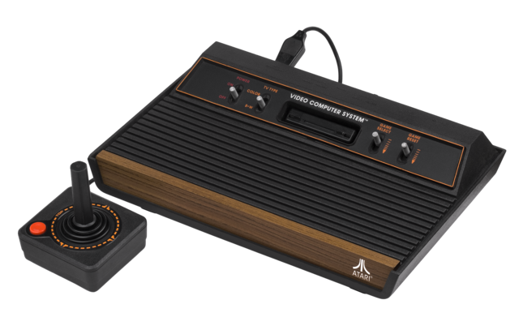
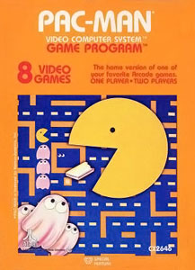
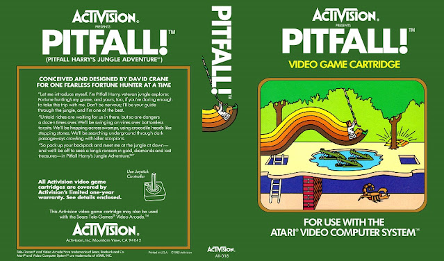
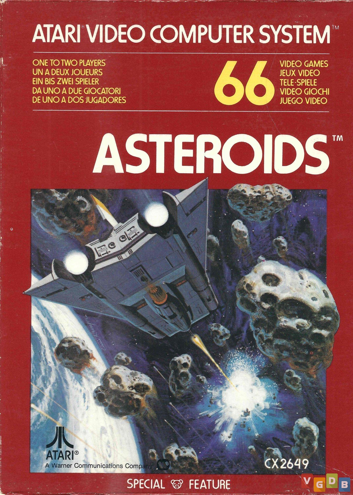

Retro Gamer Cave
Atari 2600
Responsável pela primeira grande febre dos games no mundo.
Empresa fabricante:Atari.inc
Desenvolvido por:Jay Miner
Ano de lancamento:1977

O Atari 2600 foi um dos primeiros e mais populares consoles de videogame da história. Foi lançado em 1977 pela Atari, que aproveitou o sucesso do jogo Pong nos arcades. O Atari 2600 usava cartuchos intercambiáveis que permitiam ao usuário jogar vários jogos diferentes. O console vendeu mais de 30 milhões de unidades e teve mais de 500 jogos oficiais, além de muitos clones e piratas. O Atari 2600 foi responsável pela primeira grande febre dos videogames no mundo, mas também sofreu com a crise de 1983, causada pela saturação do mercado e pela baixa qualidade de alguns jogos.

O console foi descontinuado em 1992, mas continuou sendo lembrado como um ícone da cultura pop e um símbolo da geração que cresceu nos anos 70 e 80. O console foi relançado em várias versões, como o Atari Flashback, e seus jogos foram portados para outras plataformas, como computadores e celulares. ele também inspirou muitos outros jogos e consoles, e é considerado um dos mais influentes da história dos videogames.
TOP 3 JOGOS DO ATARI 2600
- PAC-MAN(1980):Um jogo de labirinto para um ou dois jogadores, que era baseado no sucesso dos arcades. O jogador controlava um personagem amarelo que devorava pastilhas e fugia de fantasmas. O primeiro jogo foi desenvolvido para a empresa Namco pelo japonês Toru Iwatani, que também chegou a desenvolver outros jogos, embora nenhum tenha atingido o mesmo sucesso do Pac-Man.Pac-Man foi o jogo mais vendido do Atari 2600 Com mais de 7 milhões de cópias. o Come-come também fez um baita sucesso, com mais de 30 milhões de jogos vendidos nos Estados Unidos.

- PITFALL!(1982):Um jogo de aventura para um jogador, que era considerado o primeiro jogo de plataforma. O jogador controlava um explorador que saltava sobre obstáculos e coletava tesouros na selva. foi um dos primeiros jogos eletrônicos com um protagonista humano realmente identificável. Uma óbvia homenagem aos caçadores de tesouros do cinema como Indiana Jones (cujo primeiro filme saiu um ano antes), Pitfall! caiu rapidamente nas graças do numeroso público do Atari e rendeu quatro milhões de unidades vendidas

- ASTEROIDS(1981):Um jogo de ação para um ou dois jogadores, que era uma adaptação do clássico dos arcades. O jogador controlava uma nave espacial que atirava em asteroides e naves inimigas. O game utilizava gráficos vetoriais, ou seja, os gráficos eram linhas desenhadas em um monitor vetorial. Tal abordagem parecia melhor porque tornava a mira e os controles do jogo muito mais fluidos e flexíveis, ao invés de ficarem estáticos ou travando como costumava ocorrer com gráficos rasterizados. O jogo também apresentava visual simples, sem cores e nem padrões muito ousados ou músicas, se apoiando apenas em sua jogabilidade viciante.
